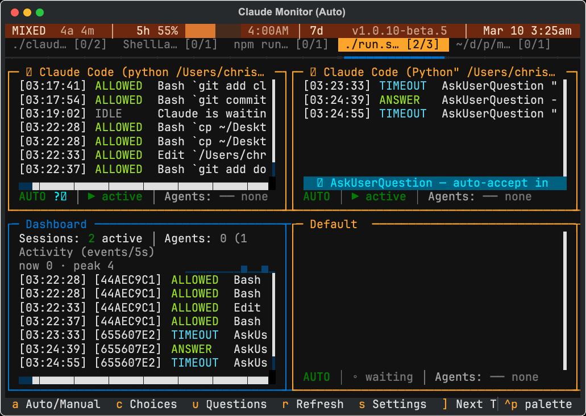
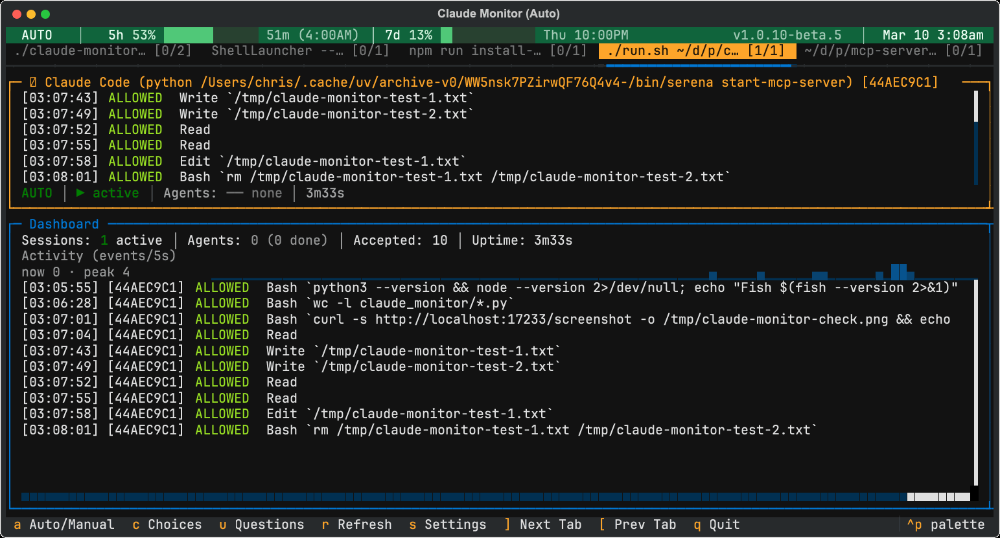
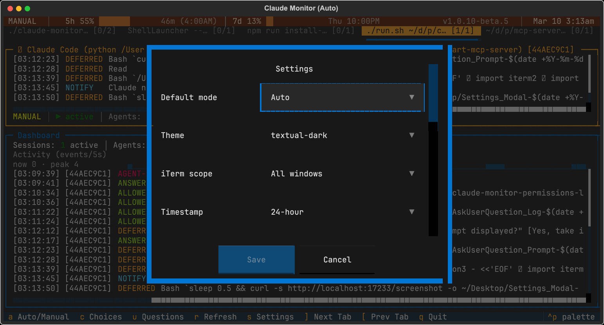
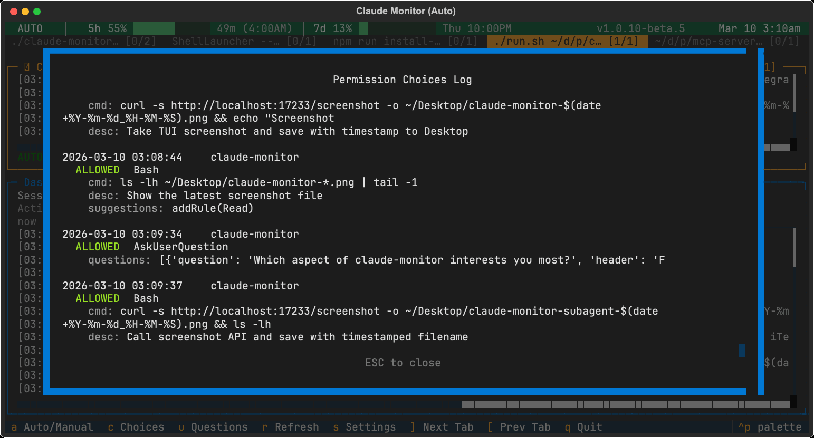
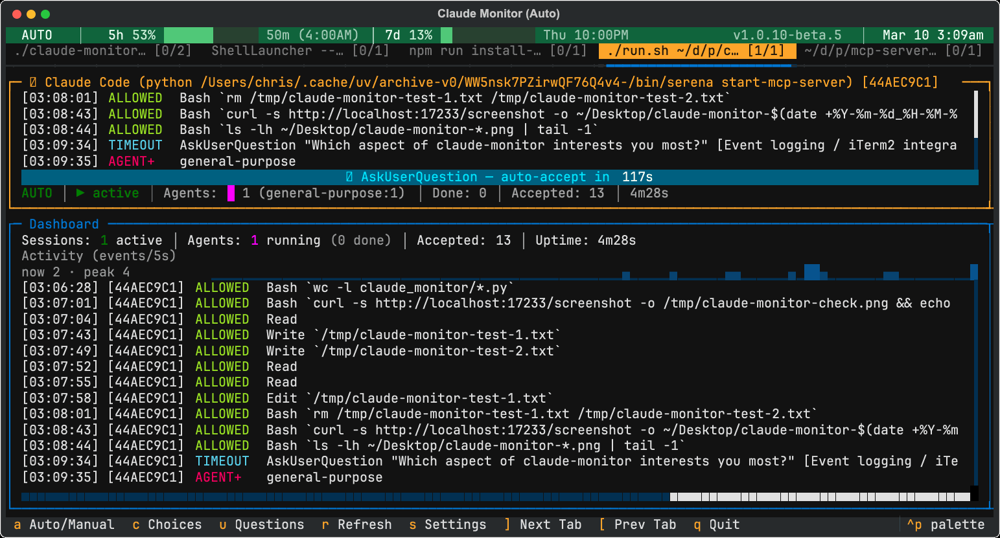

A terminal UI that mirrors your iTerm2 pane layout, auto-accepts permission prompts, and keeps every Claude Code session running unattended.
Free & open source
Permission prompts are automatically accepted so sessions run hands-free. No more switching between panes to approve every Bash, Edit, or Write.
Toggle individual panes between auto and manual mode. Keep risky sessions supervised while letting routine work run unattended.
Reads your iTerm2 pane tree and renders an exact visual replica with proportional sizing. Vertical and horizontal splits are mirrored precisely.
Tracks subagent lifecycle per session with active counts, type breakdowns, and completion totals. Know exactly what's running where.
Live Anthropic API quota utilization with 5-hour and 7-day progress bars, color coding, and reset countdowns. Uses your OAuth token from macOS Keychain.
Localhost API for external tools. Get screenshots (PNG/SVG), structured JSON state, and health checks. Build Telegram bots or custom dashboards on top.

Aggregate stats, activity sparkline, and combined event feed from all sessions.

Configure theme, mode defaults, iTerm2 scope, timestamps, and 20 color themes.

Full history of every permission request with tool details, commands, and descriptions.

Countdown timer for auto-accepting AskUserQuestion prompts. Configurable per-pane.